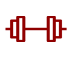

Critérios para doação
de sangue
Veja todos os requisitos para ser um doador
e fazer parte dessa corrente do bem.
Requisitos básicos
Para doar sangue, é preciso:
-
Ter entre
16 e 69 anos -

Estar
em boas condições
de saúde -

Pesar mais
de 50 kg -

Estar alimentado
(evitar alimentos
gordurosos) -
Apresentar
documento oficial
com foto
Outros critérios importantes
Homens: a cada 60 dias (máx. 4 vezes ao ano)
Mulheres: a cada 90 dias (máx. 3 vezes ao ano)
Ter dormido pelo menos 6 horas nas últimas 24h.
Aguardar 12 meses após a realização do procedimento.
Exceto para região genital e mucosa (12 meses).
Após parto normal: aguardar 90 dias.
Após cesárea: aguardar 180 dias.
Durante a amamentação: aguardar 12 meses após o fim.
Algumas vacinas exigem prazo de espera.
Consulte a lista completa abaixo.
Aguardar 7 dias após o desaparecimento dos sintomas.
Alguns medicamentos devem ser avaliados
individualmente para determinar a aptidão à doação.
Não podem doar pessoas com doenças transmissíveis pelo sangue, como Hepatites, HIV, Sífilis, entre outras.
Alguns procedimentos exigem prazo de espera.
Consulte a lista completa abaixo.
Viagens para áreas com risco de doenças podem impedir a doação. Consulte a lista completa abaixo.